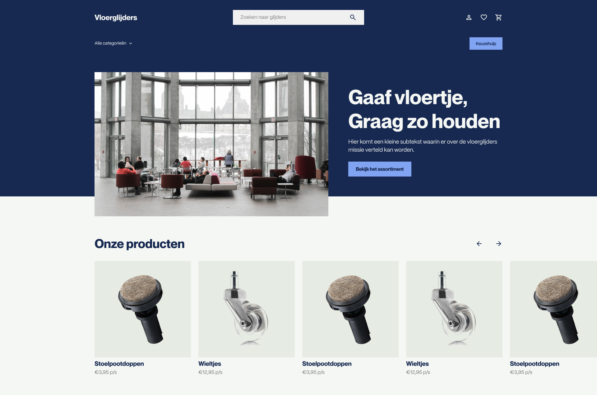
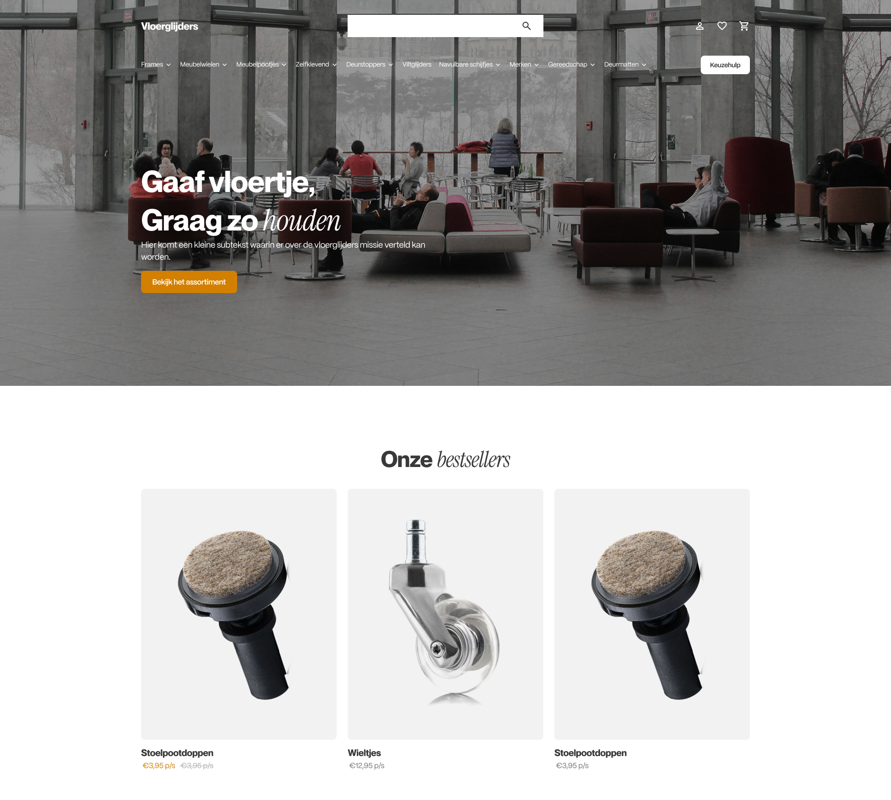
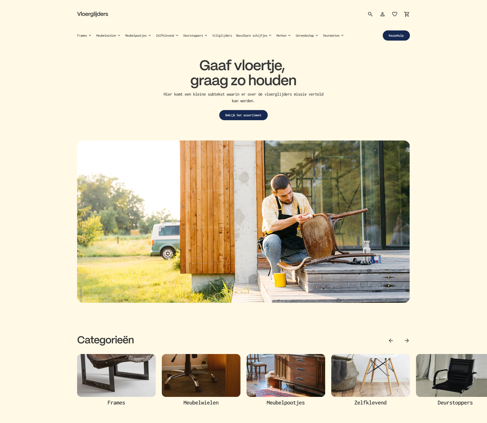

Vloerglijders
03/2025
UI
Vloerglijders arrow_outward is a company that sells products that help protect your floor from scratches that occur from dragging chairs, stools, tables and the likes across the floor.
Wishes
Vloerglijders' current site is aging rapidly, so they came to us for a redesign. They didn't have a lot of specific wishes in mind, but did provide us with some examples of web pages they like.
One of the inspirations they named was Cloudpillo arrow_outward, a Dutch pillow brand with modern aesthetics. Another example was another Dutch brand, Upfront arrow_outward which focuses on healthy replacements for a lot of types of food found in the supermarket, protein powders, and other workout related products. And finally we also had Booking arrow_outward (another dutch brand ;)) the popular hotel-booking site.
Wireframing
My first step was blocking out some different variations of designs by looking at what content would go where on the page with some wireframes. I tried to explore similar but visually distinct looks that fit the brand and the inspiration they had provided.
Visuals
Looking at their inspiration I decided for a more youthful/instagram look for their visuals, and tried to mix more interior design images with more 'candid' photography to make it appear younger. Seeing how this is still a more conceptual phase I wasn't afraid to let it be more 'stock-y' with images.
Conceptual Redesigns
In the end the three concepts came together nicely in the exploration phase. The next step would be to work out the designs more in depth according to their wishes and what they liked best.
Concept 1: Booking
This first concept was the one more in the style of Booking arrow_outward. This meant more color blocking, and more images. To differentiate more between the different designs I did forgo any rounded edges for a more corporate feel.
Something I did in all the design to make the product images stand out more is cut away the background so the product photography could be more part fo the design. This lets you customize the product card more, in this case I decided to still use a blocked out background, but in theory they could be completely standalone.
Concept 2: Cloudpillo
Something I really wanted to explore here is mixing sans serif and a more cursive serif in one sentence, which is what Cloudpillo arrow_outward does in their styling. The page itself is quite minimalist, where the images do most of the speaking. Similar to Cloudpillo I did try to elevate the design through the use of some fun shapes to break up the design here and there.
Concept 3: Upfront(ish)
Concept 3 is in a style reminiscent of Upfront arrow_outward. This design is more simplistic than the others, due to the fact that images and text are more separate from eachother rather than implemented into a single component. This creates a calmer and somewhat indie feel.
